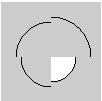

Draws an arc in the display window.

background(125);
arc(50, 55, 50, 50, 0, PI/2);
noFill();
arc(50, 55, 60, 60, PI/2, PI);
arc(50, 55, 70, 70, PI, TWO_PI-PI/2);
arc(50, 55, 80, 80, TWO_PI-PI/2, TWO_PI);
//////////////////////////////////////////////////////////////////
void setup()
{
size(300, 200);
background(255);
smooth();
rectMode(CENTER); // show bounding boxes
stroke(128);
rect(35, 35, 50, 50);
rect(105, 35, 50, 50);
rect(175, 35, 50, 50);
rect(105, 105, 100, 50);
stroke(0);
arc(35, 35, 50, 50, 0, PI / 2.0); // lower quarter circle
arc(105, 35, 50, 50, -PI, 0); // upper half of circle
arc(175, 35, 50, 50, -PI / 6, PI / 6); // 60 degrees
arc(105, 105, 100, 50, PI / 2, 3 * PI / 2); // 180 degrees
}